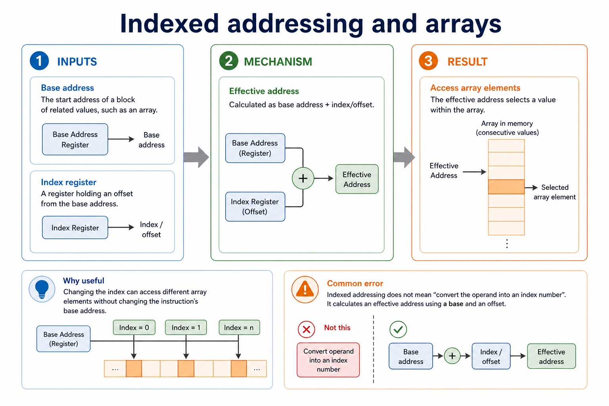

Addressing modes and address-sensitive instructions
Immediate addressing uses the operand as the value itself. Direct addressing uses the operand as the address of the value. Indirect addressing treats the operand as the address of a location that holds the effective address. Indexed addressing forms an effective address by adding IX to the address operand. Relative addressing forms a target/effective address by adding an offset to the current or next instruction address held in PC.
LDI follows the address stored at the operand location; LDX adds IX to the address operand; LDR #n loads the immediate value n into IX. CMI <address> uses indirect addressing: the contents of <address> give the address of the value compared with ACC.
After CMP or CMI, JPE <address> jumps when the comparison result is True and JPN <address> jumps when it is False. Relative addressing is a required addressing-mode concept, but LDR is not a relative-load instruction in the Version 2 instruction set.
Worked example: Compare five operand interpretations
With operand 20, immediate uses value 20; direct uses Memory[20]; indirect follows Memory[20] as another address; indexed uses address 20 + IX; relative uses PC plus a signed or stated offset. Separately, if CMI POINTER produces True, JPE MATCH branches to MATCH; a False comparison allows JPN DIFFERENT to branch.
Official LDR, CMI, JPE and JPN semantics
Official LDR, CMI, JPE and JPN semantics: source-grounded visual explanation.
Lesson fact: LDR #n loads the immediate value n into the index register IX.
Lesson fact: CMI <address> compares ACC with a value reached using indirect addressing.
Lesson fact: JPE <address> jumps when the preceding comparison result is True.
Lesson fact: JPN <address> jumps when the preceding comparison result is False.
Lesson fact: Do not reinterpret these instructions as relative load, immediate compare, equal/zero branch or negative-status branch.
Indexed addressing and arrays

Indexed addressing and arrays: source-grounded visual explanation.
Lesson fact: Base address
Lesson fact: The start address of a block of related values, such as an array.
Lesson fact: Index register
Lesson fact: A register holding an offset from the base address.
Lesson fact: Effective address
Lesson fact: Calculated as base address + index/offset.
Lesson fact: Why useful
Lesson fact: Changing the index can access different array elements without changing the instruction's base address.
Lesson fact: Common error
Lesson fact: Indexed addressing does not mean "convert the operand into an index number". It calculates an effective address using a base and an offset.
Core syllabus practice
Addressing modes and address-sensitive instructions: apply and assess
Targeted practice
1. Which load follows a pointer in memory?
Show answer
LDI.
2. Which load combines its operand with IX?
Show answer
LDX.
3. What does LDR #4 do?
Show answer
It loads 4 into IX; it does not use relative addressing.
4. When does JPE branch?
Show answer
When the preceding comparison result is True.
5. How is a relative address formed?
Show answer
By adding an offset to the current or next instruction address represented by PC, according to the stated model.
Exam-style question
6 marks
Compare immediate, direct, indirect, indexed and relative addressing, then state the effects of LDR #n, CMI <address>, JPE <address> and JPN <address>.
Show MS
Answer
Guidance
Marks
immediate uses operand as value; direct uses operand as address
Do not award relative LDR, immediate CMI, equal/zero JPE or negative-status JPN.
1
indirect follows an address stored at the operand address
1
indexed adds IX to the address operand
1
relative adds an offset to the PC/current or next instruction address
1
LDR loads immediate n to IX and CMI compares through indirect addressing
The operand is not always the thing you want. Sometimes it is a treasure map.
Addressing modes tell the CPU how to interpret an operand. The same
number can be used as the actual value, as a memory address, as a
pointer to another address, or as part of an indexed address calculation.
Identifyimmediate, direct, indirect and indexed addressing
Calculateeffective addresses and fetched values in simple examples
Correctoperand interpretation errors in exam-style wording
#20 -> value 2020 -> memory[20](20) -> memory[memory[20]]BASE + IX -> array element
Same number, different meaning. That is the lesson.
Why this matters
Many marks come from explaining whether the operand is a value, an address or a pointer.
Common error
Students treat every operand as data. Direct and indirect addressing often use the operand as an address.
Warm-up hook
`LOAD #20` and `LOAD 20` look similar. Do they mean the same thing?
Click the best answer. The hash is tiny, but it can save a whole mark.
Click one. The addressing mode tells the CPU how to interpret the operand.
Knowledge point 1
Addressing mode means operand interpretation
OperandThe part of an instruction that supplies data, an address, a register or another reference.Addressing modeThe rule used to interpret the operand and locate the data needed by the instruction.Effective addressThe actual memory address used after applying the addressing mode.Fetched valueThe final data value obtained or used by the instruction after interpretation.
Addressing mode means operand interpretation: source-grounded visual explanation.
Lesson fact: The part of an instruction that supplies data, an address, a register or another reference.
Lesson fact: Addressing mode
Lesson fact: The rule used to interpret the operand and locate the data needed by the instruction.
Lesson fact: Effective address
Lesson fact: The actual memory address used after applying the addressing mode.
Lesson fact: Fetched value
Lesson fact: The final data value obtained or used by the instruction after interpretation.
Knowledge point 2
Four common addressing modes
Mode
Operand means
Example
Exam-safe wording
Immediate
The actual value to use.
LOAD #20
The operand is the value 20 itself.
Direct
The memory address of the value.
LOAD 20
The CPU loads the value stored at memory address 20.
Indirect
The address of a memory location that stores another address.
LOAD (20)
The CPU looks at address 20 to find the address of the actual value.
Indexed
Base address plus an index register or offset.
LOAD 100, IX
The effective address is base address 100 plus the index value.
Five addressing modes
Five addressing modes: source-grounded visual explanation.
Lesson fact: Immediate addressing uses the operand field as the value itself.
Lesson fact: Direct addressing uses the operand field as the address of the value.
Lesson fact: Indirect addressing follows an address stored at the operand address to reach the value.
Lesson fact: Indexed addressing adds an index value to a base address to form the effective address.
Lesson fact: Relative addressing adds an offset to a PC-based instruction address to form the target or effective address.
Lesson fact: LDR #n loads the immediate value n into IX; it is not relative addressing.
Knowledge point 3
Effective address: where the CPU actually reads
Address
Stored value
Note
20
70
Can be a data value or pointer, depending on mode.
70
999
Used by indirect example.
100
11
Start of an array-like block.
103
44
Used when base 100 and IX = 3.
LOAD #20Use value 20 directly. No memory lookup for the operand value.LOAD 20Read memory[20], so the value loaded is 70.LOAD (20)Read memory[20] to get address 70, then read memory[70] to get 999.LOAD 100, IX=3Effective address = 100 + 3 = 103, so value loaded is memory[103] = 44.
Knowledge point 4
Indexed addressing and arrays
Base addressThe start address of a block of related values, such as an array.Index registerA register holding an offset from the base address.Effective addressCalculated as base address + index/offset.Why usefulChanging the index can access different array elements without changing the instruction's base address.
Common error
Indexed addressing does not mean "convert the operand into an index number". It calculates an effective address using a base and an offset.
Interactive tool
Addressing mode simulator
Use the memory table above: memory[20] = 70, memory[70] = 999, memory[103] = 44, and IX = 3.
Worked examples
Trace the operand interpretation
5-minute quiz
Practice with instant checking
Be precise. "The CPU just kind of goes there" is not a valid addressing mode.
Mistake debugging
Fix the operand interpretation
Exam-style questions
Cambridge-style questions with expandable mark schemes
These are original Cambridge-style questions. MS wording distinguishes address, value, pointer and effective address.
Summary
Operand meaning depends on mode
ImmediateOperand is the value itself.
DirectOperand is the address of the value.
IndirectOperand points to an address that stores the actual address.
IndexedEffective address = base + index/offset.
Effective addressThe actual address used after interpretation.
Exam habitState what the operand represents before calculating.
Homework
Make addressing mode traces exact
Define immediate, direct, indirect and indexed addressing in one sentence each.
Using memory[40] = 88 and memory[88] = 123, explain the difference between `LOAD #40`, `LOAD 40` and `LOAD (40)`.
For base address 200 and index register 6, calculate the effective address and explain why indexed addressing is useful for arrays.
Write a 5-mark answer: "Explain the difference between direct and indirect addressing."
Correct this sentence: "In immediate addressing, the operand is always a memory address."